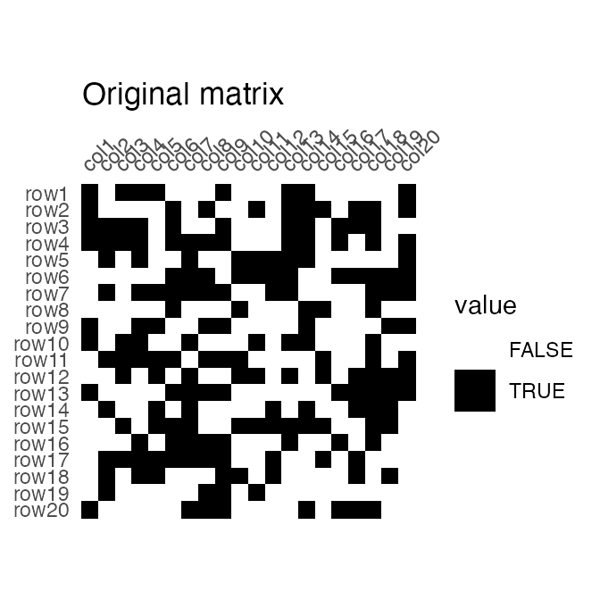
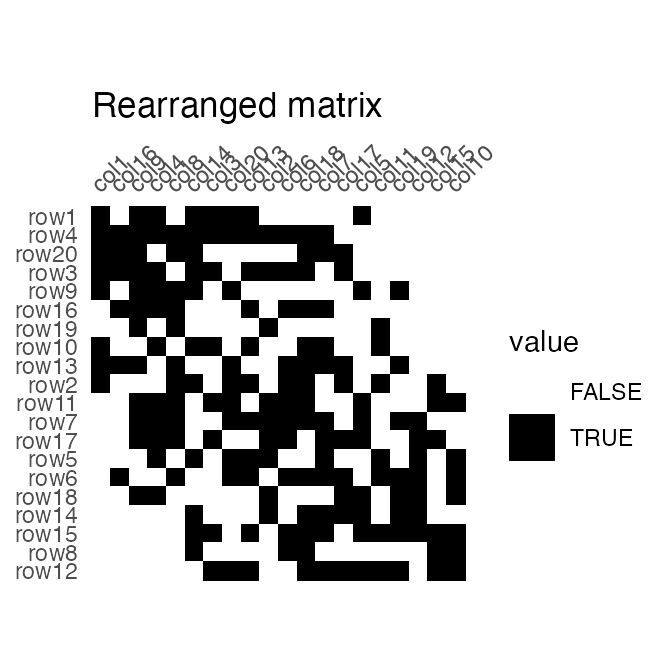
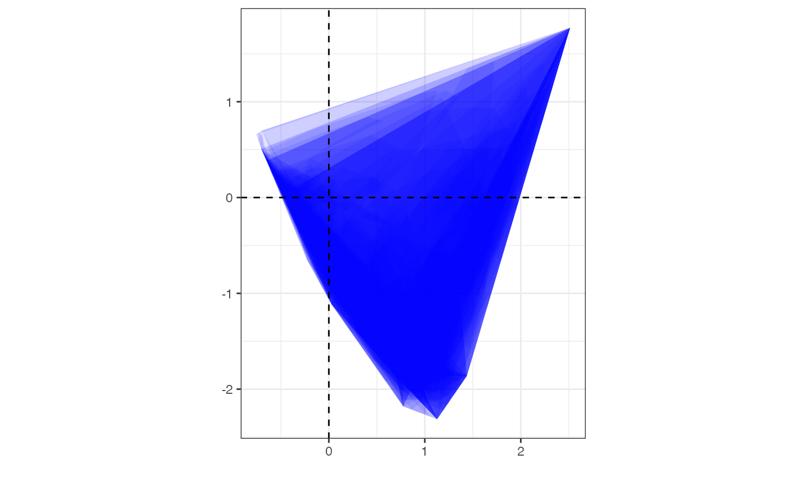
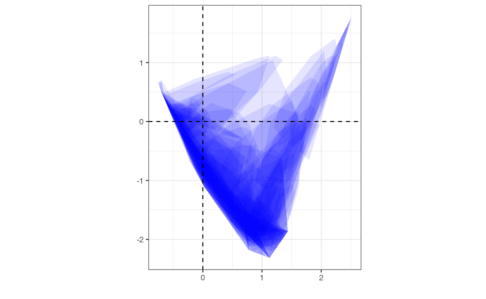

# Load packages
library(tabula)
library(folio) # Datasets
library(dimensio) # Multivariate analysis
library(magrittr)Introduction
The matrix seriation problem in archaeology is based on three conditions and two assumptions, which Dunnell (1970) summarizes as follows.
The homogeneity conditions state that all the groups included in a seriation must:
- Be of comparable duration,
- Belong to the same cultural tradition,
- Come from the same local area.
The mathematical assumptions state that the distribution of any historical or temporal class:
- Is continuous through time,
- Exhibits the form of a unimodal curve.
Theses assumptions create a distributional model and ordering is accomplished by arranging the matrix so that the class distributions approximate the required pattern. The resulting order is inferred to be chronological.
Reciprocal ranking
Reciprocal ranking iteratively rearrange rows and/or columns according to their weighted rank in the data matrix until convergence (Ihm 2005).
For a given incidence matrix \(C\):
- The rows of \(C\) are rearranged in increasing order of:
\[ x_{i} = \sum_{j = 1}^{p} j \frac{c_{ij}}{c_{i \cdot}} \]
- The columns of \(C\) are rearranged in a similar way:
\[ y_{j} = \sum_{i = 1}^{m} i \frac{c_{ij}}{c_{\cdot j}} \]
These two steps are repeated until convergence. Note that this procedure could enter into an infinite loop.
## Build an incidence matrix with random data
set.seed(12345)
bin <- sample(0:1, 400, TRUE, c(0.6, 0.4))
incidence1 <- IncidenceMatrix(data = bin, nrow = 20)
## Get seriation order on rows and columns
## If no convergence is reached before the maximum number of iterations (100),
## it stops with a warning.
(indices <- seriate_rank(incidence1, margin = c(1, 2), stop = 100))
#> <PermutationOrder: reciprocal ranking>
#> Permutation order for matrix seriation:
#> - Row order: 1 4 20 3 9 16 19 10 13 2 11 7 17 5 6 18 14 15 8 12...
#> - Column order: 1 16 9 4 8 14 3 20 13 2 6 18 7 17 5 11 19 12 15 10...
## Permute matrix rows and columns
incidence2 <- permute(incidence1, indices)
## Plot matrix
plot_heatmap(incidence1) +
ggplot2::labs(title = "Original matrix") +
ggplot2::scale_fill_manual(values = c("TRUE" = "black", "FALSE" = "white"))
plot_heatmap(incidence2) +
ggplot2::labs(title = "Rearranged matrix") +
ggplot2::scale_fill_manual(values = c("TRUE" = "black", "FALSE" = "white"))
The positive difference from the column mean percentage (in french “écart positif au pourcentage moyen”, EPPM) represents a deviation from the situation of statistical independence (Desachy 2004). As independence can be interpreted as the absence of relationships between types and the chronological order of the assemblages, EPPM is a useful graphical tool to explore significance of relationship between rows and columns related to seriation (Desachy 2004).
## Replicates Desachy 2004 results
## Coerce dataset to an abundance matrix
ccounts1 <- as_count(compiegne)
## Plot original data matrix
plot_ford(ccounts1, EPPM = TRUE) +
ggplot2::labs(title = "Original dataset") +
khroma::scale_fill_bright()
## Get seriation order for columns on EPPM using the reciprocal averaging method
## Expected column order: N, A, C, K, P, L, B, E, I, M, D, G, O, J, F, H
(cindices <- seriate_rank(ccounts1, EPPM = TRUE, margin = 2))
#> <PermutationOrder: reciprocal ranking>
#> Permutation order for matrix seriation:
#> - Row order: 1 2 3 4 5...
#> - Column order: 14 1 3 11 16 12 2 5 9 13 4 7 15 10 6 8...
## Permute columns
ccounts2 <- permute(ccounts1, cindices)
## Plot new matrix
plot_ford(ccounts2, EPPM = TRUE) +
ggplot2::labs(title = "Reordered dataset") +
khroma::scale_fill_bright()correspondence analysis
Seriation
Correspondence Analysis (CA) is an effective method for the seriation of archaeological assemblages. The order of the rows and columns is given by the coordinates along one dimension of the CA space, assumed to account for temporal variation. The direction of temporal change within the correspondence analysis space is arbitrary: additional information is needed to determine the actual order in time.
## Coerce dataset to an count matrix
zcounts1 <- as_count(zuni)
## correspondence analysis of the whole dataset
corresp <- dimensio::ca(zcounts1)
## Plot CA results
dimensio::plot(corresp) +
ggplot2::theme_bw()
## Get row permutations from CA coordinates
(zindices <- seriate_average(zcounts1, margin = 1))
#> <PermutationOrder: average ranking>
#> Permutation order for matrix seriation:
#> - Row order: 372 387 350 367 110 417 364 407 357 160 373 406 35...
#> - Column order: 1 2 3 4 5 6 7 8 9 10 11 12 13 14 15 16 17 18...
## Permute data matrix
zcounts2 <- permute(zcounts1, zindices)
## Plot Ford diagram
## Warning: this may take a few seconds!
plot_ford(zcounts2) +
ggplot2::labs(title = "Reordered dataset") +
ggplot2::theme(axis.text.y = ggplot2::element_blank())
Refining
Peeples and Schachner (2012) propose a procedure to identify samples that are subject to sampling error or samples that have underlying structural relationships and might be influencing the ordering along the CA space. This relies on a partial bootstrap approach to CA-based seriation where each sample is replicated n times. The maximum dimension length of the convex hull around the sample point cloud allows to remove samples for a given cutoff value.
According to Peeples and Schachner (2012), “[this] point removal procedure [results in] a reduced dataset where the position of individuals within the CA are highly stable and which produces an ordering consistend with the assumptions of frequency seriation.”
## Replicates Peeples and Schachner 2012 results
## Samples with convex hull maximum dimension length greater than the cutoff
## value will be marked for removal.
## Define cutoff as one standard deviation above the mean
fun <- function(x) { mean(x) + sd(x) }
## Get indices of samples to be kept
## Warning: this may take a few seconds!
(zuni_keep <- refine_seriation(corresp, cutoff = fun, n = 1000))
#> <RefineCA>
#> Partial bootstrap CA seriation refinement:
#> - Cutoff values: (rows) (columns) 2.55 - (rows) (columns) 0.38
#> - Rows to keep: 346 of 420 (82%)
#> - Columns to keep: 14 of 18 (78%)
## Plot convex hull
## blue: convex hull for samples; red: convex hull for types
### All bootstrap samples
rchull <- as.data.frame(zuni_keep[["rows"]][["chull"]])
ggplot2::ggplot(data = rchull) +
ggplot2::aes(x = x, y = y, group = id) +
ggplot2::geom_polygon(fill = "blue", alpha = 0.1) +
ggplot2::geom_vline(xintercept = 0, size = 0.5, linetype = "dashed") +
ggplot2::geom_hline(yintercept = 0, size = 0.5, linetype = "dashed") +
ggplot2::coord_fixed() +
ggplot2::labs(x = "", y = "") +
ggplot2::theme_bw()
### Only retained samples
rchull_sub <- subset(rchull, id %in% zuni_keep[["rows"]][["keep"]])
ggplot2::ggplot(data = rchull_sub) +
ggplot2::aes(x = x, y = y, group = id) +
ggplot2::geom_polygon(fill = "blue", alpha = 0.1) +
ggplot2::geom_vline(xintercept = 0, size = 0.5, linetype = "dashed") +
ggplot2::geom_hline(yintercept = 0, size = 0.5, linetype = "dashed") +
ggplot2::coord_fixed() +
ggplot2::labs(x = "", y = "") +
ggplot2::theme_bw()
## Histogram of convex hull maximum dimension length
hull_length <- data.frame(length = zuni_keep[["rows"]][["length"]])
ggplot2::ggplot(data = hull_length) +
ggplot2::aes(x = length) +
ggplot2::geom_histogram(breaks = seq(0, 4.5, by = 0.5), fill = "grey70") +
ggplot2::geom_vline(xintercept = fun(hull_length$length), colour = "red") +
ggplot2::labs(
title = "Convex hull max. dim.",
x = "Maximum length",
y = "Count"
) +
ggplot2::theme_bw()
References
Desachy, Bruno. 2004. “Le Sériographe EPPM: Un Outil Informatisé de Sériation Graphique Pour Tableaux de Comptages.” Revue Archéologique de Picardie 3 (1): 39–56. https://doi.org/10.3406/pica.2004.2396.
Dunnell, Robert C. 1970. “Seriation Method and Its Evaluation.” American Antiquity 35 (3): 305–19. https://doi.org/10.2307/278341.
Ihm, Peter. 2005. “A Contribution to the History of Seriation in Archaeology.” In Classification – the Ubiquitous Challenge, edited by Claus Weihs and Wolfgang Gaul, 307–16. Berlin Heidelberg: Springer. https://doi.org/10.1007/3-540-28084-7_34.
Peeples, Matthew A., and Gregson Schachner. 2012. “Refining Correspondence Analysis-Based Ceramic Seriation of Regional Data Sets.” Journal of Archaeological Science 39 (8): 2818–27. https://doi.org/10.1016/j.jas.2012.04.040.